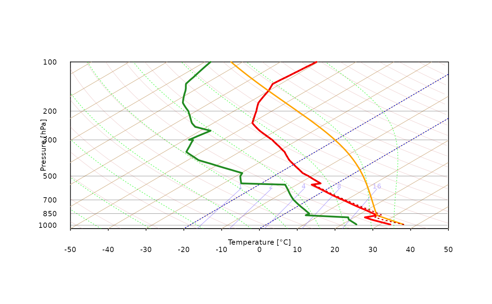

Internal package function for exporting interpolated profile with 5 m (or user-defined) steps
pressure [hPa]
altitude [m] (can be above sea level or above ground level as function always consider first level as surface, i.e h = 0 m) altitude [meters]
temperature [degree Celsius]
dew point temperature [degree Celsius]
wind direction [azimuth in degrees]
wind speed [knots]
accuracy of computations where 3 = high (slow), 2 = medium (recommended), 1 = low (fast)
interpolation step to be used for vertical interpolation. Valid only if `accuracy` is set to 3 (default is set to 5 m)
(optional) vector of length 2 for bottom and top heights used for computing parcel starting parameters; default: 0, 500
(optional) for moving storms only - one can define vector of length two with wind speed [m/s] and wind directions [degrees] that will be used to compute adjusted SRH parameters
Data frame of computed values for visualizing parcel trajectories
pressure pressure [hPa]
altitude altitude [m]
temp temperature [degree Celsius]
tempV virtual temperature [degree Celsius]
dpt dew point temperature [degree Celsius]
wd wind direction [azimuth in degrees]
ws wind speed [knots]
MU temperature for most unstable CAPE trajectory [degree Celsius]
SB temperature for surface based CAPE trajectory [degree Celsius]
ML temperature for mixed layer CAPE trajectory [degree Celsius]
data("sounding_vienna")
attach(sounding_vienna)
#> The following objects are masked from sounding_vienna (pos = 3):
#>
#> altitude, dpt, pressure, temp, wd, ws
#> The following objects are masked from sounding_vienna (pos = 4):
#>
#> altitude, dpt, pressure, temp, wd, ws
#> The following objects are masked from sounding_vienna (pos = 5):
#>
#> altitude, dpt, pressure, temp, wd, ws
#> The following object is masked from package:datasets:
#>
#> pressure
skewt_plot(close_par = FALSE)
output = sounding_export(pressure, altitude, temp, dpt, wd, ws)
skewt_lines(output$dpt, output$pressure, col = "forestgreen", lwd = 2.5)
skewt_lines(output$temp, output$pressure, col = "red", lwd = 2.5)
skewt_lines(output$MU, output$pressure, col = "orange", lty = 1, lwd = 2)
skewt_lines(output$tempV, output$pressure, col = "red3", lty = 3, lwd = 1.5)
